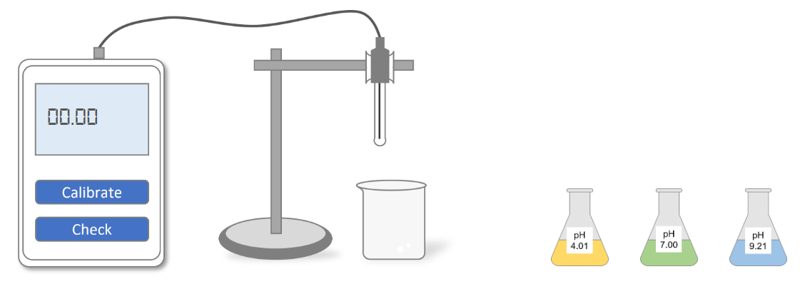
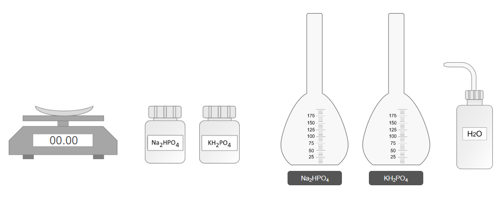
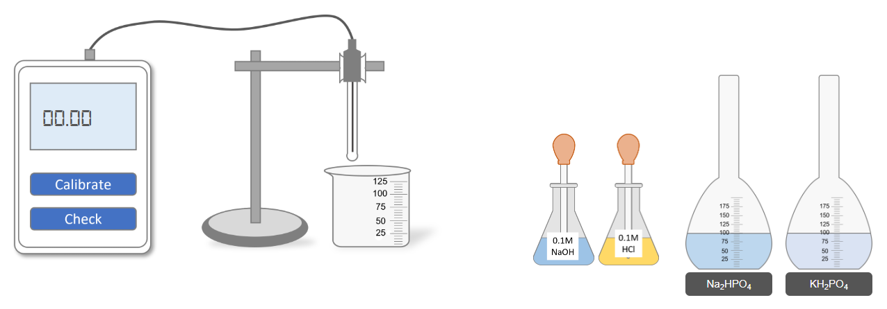
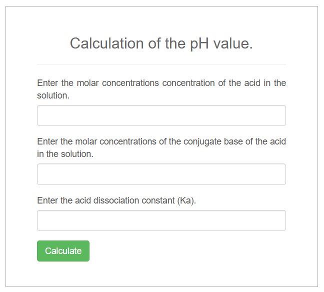

Preparation and pH Adjustment of Phosphate Buffer

Step 1: Calibration of the pH Meter
- Select the pH 4.01 buffer solution.
- Immerse the glass electrode of the pH meter into the buffer solution.
- Press the Calibrate button on the pH meter.
- Confirm that the pH meter is calibrated to pH 4.01.
- Empty the flask containing the buffer solution.
- Repeat the calibration process using the pH 7.0 buffer solution.
- Repeat once more using the pH 9.21 buffer solution.
- The pH meter is now fully calibrated. Proceed to the next step.

Step 2: Preparation of Phosphate Solutions
A. Preparation of 100 mL Na₂HPO₄ Solution
- Select the Na₂HPO₄ bottle.
- Weigh 1.42 g of Na₂HPO₄ using a weighing balance.
- Transfer the weighed Na₂HPO₄ into a clean volumetric flask.
- Add distilled water to the flask up to the 100 mL mark.
- Shake the flask thoroughly to ensure complete dissolution.
B. Preparation of 100 mL KH₂PO₄ Solution
- Select the KH₂PO₄ bottle.
- Weigh 1.36 g of KH₂PO₄ using a weighing balance.
- Transfer the weighed KH₂PO₄ into a clean volumetric flask.
- Add distilled water to the flask up to the 100 mL mark.
- Shake the flask thoroughly to ensure complete dissolution.
- Both phosphate solutions are now prepared. Proceed to the next step.

Step 3: Measurement and Adjustment of pH
- Select the prepared Na₂HPO₄ solution.
- Select the prepared KH₂PO₄ solution (or the target mixed buffer solution).
- Immerse the pH meter glass electrode into the target solution.
- Press the Check button on the pH meter and record the pH value.
pH Adjustment
- If the measured pH is less than 7.2, add a few drops of NaOH solution to the target solution.
- If the measured pH is greater than 7.2, add a few drops of HCl solution to the target solution.
- After adjustment, press the Check button again and record the new pH value.
- Repeat small additions of NaOH or HCl and recheck until the desired pH of 7.2 is obtained.

Use of calculator for both phosphate and carbonate–bicarbonate buffer systems.
Sample 1:
Acid concentration, [HA]=[H2PO4]=0.10 M
Conjugate base concentration, [A-]=[HPO42-]=0.20M
Acid dissociation constant, Ka=6.2x10-8
It will give pH value=7.51
pH = pKa + log([A−]/[HA])
pH = 7.21 + log(0.20/0.10)
pH = 7.21 + log(2)
pH ≈ 7.21 + 0.301 = 7.51
Sample 2:
Acid concentration, [HA]=[H2CO3]=0.05 M
Conjugate base concentration, [A-]=[HCO3-]=0.15 M
Acid dissociation constant, Ka=4.3x10-7
It will give pH value=6.85
pH = pKa + log([A−]/[HA])
pH = 6.37 + log(0.15/0.05)
pH = 6.37 + log(3)
pH ≈ 6.37 + 0.477 = 6.85